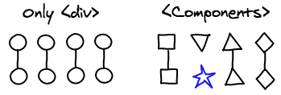

React diff algorithm
React’s diff algorithm 글을 보고 번역 말 옮기기
영어 공부 할 셈 시작했는데 중간에 내팽개쳐 놨다가 이제서야 겨우 ㅜㅜ
영어 공부해야 겠다는 사실과 번역엔 영어+한국어 실력이 같이 필요하다는 사실만 깨달음.
React 비교 알고리즘
React는 Facebook이 개발한 UI를 구성하기 위한 Javascript library로 밑바닥부터 철저하게 성능을 염두에 두고 디자인되었다. 이 글에서는 React에서 어떻게 diff 알고리즘을 수행하고 컴포넌트를 렌더링하는지 이야기할 것이며, 그에 따라 당신은 당신의 앱을 최적화할 수 있을 것이다.
Diff Algorithm
상세 구현 부분을 알아보기 전에 React가 어떻게 동작하는지 알아보자.
1 | var MyComponent = React.createClass({ |
당신은 언제든지 UI를 원하는 형태로 구성할 수 있다. render 결과가 실제 DOM 노드가 아니라는 사실을 이해하는 것이 중요하다. 그것들은 그저 경량의 Javascript object들이며, 우리는 이 경량의 Javascript object들을 virtual DOM이라고 부른다.
React는 이 virtual DOM을 이전 render에서 이후 render로 바꾸는데 필요한 최소 횟수를 찾는 데 사용할 것이다. 예를 들어, 만약 우리가 <MyComponent first={true} />를 mount한 후, <MyComponent first={false} />로 바꾸고, 그 다음 다시 unmount했을 때 DOM 수행 순서는 다음과 같다.
None to first
- 노드 생성 :
<div className="first"><span>A Span</span></div>
First to second
- attribute 교체:
className="first"를className="second"로 교체- 노드 교체:
<span>A Span</span>을<p>A Paragraph</p>로 교체
Second to None
- 노드 삭제:
<div className="second"><p>A Paragraph</p></div>
Level by Level
두 개의 임의의 트리 사이에 최소 수정 횟수를 찾아내는 건 $O(n^3)$ 문제이다. 당신이 생각하는대로 이것은 우리의 use case상에서 다루기 쉬운 문제가 아니다. React는 단순하지만 강력한 heuristics를 사용하여 $O(n)$에 적절한 근사값을 찾아낸다.
React는 트리를 단계별로 받아들인다. 이건 복잡성을 과감하게 낮추며, web application에서는 컴포넌트가 트리의 다른 레벨로 이동하는 것이 매우 드문 일이기 때문에 이건 그다지 큰 손해가 아니다. 그것들은 보통은 자신과 같은 레벨 사이에서(자식들 사이에서) 자리를 옮긴다.

List
하나의 iteration에서 5개의 컴포넌트를 render하는 컴포넌트가 있는데, 다음에 새로운 컴포넌트를 이 5개 사이에 끼워 넣는다고 생각해보자. 이 정보만으로는 어떻게 이전의 리스트와 이후의 리스트에 속해있는 컴포넌트를 매핑해야 하는지 알기 힘들다.
기본적으로 React는 리스트 내부에 있는 컴포넌트를 순서대로 매핑한다. (이전 리스트의 첫번째 컴포넌트는 이후 리스트의 첫번째 컴포넌트, 두번째는 두번째… 이렇게) 우리는 Key attribute를 이용해 React가 어떤 컴포넌트들이 서로 매핑되는지 알게 만들 수 있다. 실제로 이런 방식은 자식들 사이에 있는 unique key를 찾아내기 쉽다.

Components
React 앱은 보통 여러개의 사용자 정의 컴포넌트로 구성된다. 그리고 이것들은 결과적으로 대부분 div들로 이루어진 트리 구조로 변형된다. React diff algorithm은 이 추가적인 정보를 이용해서 같은 class인 컴포넌트들만 체크 할 것이다.
예를 들어 <Header>가 <ExampleBlock>로 교체되면, React는 header를 지워버리고, example block을 만든다. 우리는 우리의 귀중한 시간을 전혀 닮은 구석이 없을 법한 두 컴포넌트를 매칭하는데 쓸 필요가 없다.

Event Delegation
DOM 노드들에 이벤트 리스너를 붙이는 것은 엄청 느릴뿐더러 메모리도 많이 잡아 먹는다. 대신 React는 event delegation 이라고 불리는 대중적인 기술(technique)을 구현했다. 거기서 더 나아가 React는 W3C event system에 부응하도록 재구현한다. 이것의 의미는 Internet Explorer 8의 이벤트 핸들링 버그들이 과거의 것이고(무시해도 된다는 이야기인 듯), 그 모든 이벤트 이름들은 브라우저에 관계 없이(across browsers) 일관적이라는 뜻이다.
이것이 어떻게 구현되었는지 설명하겠다. 단일 이벤트 리스너는 document의 최상위에 붙여진다. 그리고 이벤트가 발생했을 때, 브라우저는 대상 DOM node를 우리에게 넘겨준다. React는 DOM 계층구조에 이벤트를 전파하기 위해서 virtual DOM 계층 구조를 훑지 않는다.
대신 우리는 모든 React 컴포넌트가 계층구조를 암호화한 유일한 id를 가지고 있다는 사실을 이용한다. 우리는 간단한 문자열 조작으로 모든 부모들의 id를 얻을 수 있다. 우리는 event listener들을 virtual DOM에 붙이는 것보다, 그것들을 hash map에 저장하는 방법이 더 나은 퍼포먼스를 낸다는 것을 알 수 있다. 여기 event가 virtual DOM사이로 보내질 때 무슨 일이 일어나는지에 대한 예시가 있다.
1 | // dispatchEvent('click', 'a.b.c', event) |
브라우저는 각각의 이벤트와 각각의 리스너를 위해 새로운 event object를 만들어낸다. 이 object는 당신이 event object를 수정하더라도 reference를 지니고 있게 해주는 nice property(?) 를 가지고 있다. 그러나, 이것은 메모리 할당을 많이 한다는 것을 의미한다. 그래서 React는 처음 시작할 때 이 object들의 pool을 할당한다. 그리고 event object가 필요할 때마다, 그 pool에서 재사용한다. 이것은 gc를 상당히 감소시킨다.
Rendering
Batching
우리가 Component에서 setState를 호출할 때마다, React는 그것에 dirty체크를 한다. 그리고 event loop가 끝났을 때, React는 모든 dirty 체크된 component들을 확인하고 다시 렌더링한다.
이 일괄 작업은 event loop 동안에는 DOM이 오직 한 번만 update된다는 것을 의미한다. 이 속성으로 앱의 성능을 좋게 만들 수 있으며, 이건 일반적으로 작성한 Javascript를 통해서는 무척 힘든 일이다. React application에서는 그냥 기본으로 사용할 수 있다.

Sub-tree Rendering
setState가 호출될 때, component는 자신의 자식을 위해 virtual DOM을 다시 빌드한다. 만약 우리가 setState를 root element에서 호출한다면, 전체 React앱은 다시 rendering될 것이다. 심지어 변경되지 않은 모든 component들까지 자신의 render 메소드를 호출할 것이다. 이건 조금 무섭고 비효율적으로 들리지만 실제로 꽤 잘 작동한다. 왜냐하면 우린 실제 DOM 노드를 조작하는 것이 아니므로.
무엇보다, UI를 어떻게 표시할지 이야기하자. 왜냐하면 화면 공간은 한정되어 있고, 우리는 보통 한 순간에 대략 수백에서 수천의 항목을 화면에 표시하기 때문이다. Javascript는 전체 interface를 관리할 수 있는 충분히 빠른 business logic를 가지고 있다.
React코드를 작성할 때 중요한 다른 포인트는 뭔가가 바뀌었을 때마다 무조건 root node에서 setState를 호출하지 않는 것이다. change event를 받았거나 그 상위의 몇 컴포넌트에서만 setState를 호출한다. 아마 최상위까지 가는 일은 매우 드물 것이다. 이건 사용자가 조작하는 부분에서만 국소적인 변화가 있다는 것을 의미한다.

Selective Sub-tree Rendering
마지막으로, 몇몇 Sub-tree가 다시 렌더링되지 않았으면 할 때가 있다. 아래 메소드를 component에서 구현한다면 component의 이전과 다음 props/state를 이용해 React에게 해당 component가 변하지 않았는지 혹은 다시 렌더링하지 않아도 되는지 말해줄 수 있다. 만약 이 메소드가 적절하게 구현되었다면 아주 큰 성능 향상을 기대할 수 있다.
1 | boolean shouldComponentUpdate(object nextProps, object nextState) |
이걸 사용하기 위해, 우리는 Javascript 객체들을 비교할 수 있어야 한다. 이 비교가 shallow여야 하는가 deep이여야 하는가 같은 종류의 수많은 이슈가 있다. 만약 그게 deep비교여야 한다면 우리는 불변 데이터 구조(immutable data structures)를 사용하거나 deep copy를 해야 한다.
그리고 우리는 이 function이 항상 호출된다는 것을 기억해야 한다. 그래서 이 function에서 걸리는 시간이 component를 render하는데 걸리는 시간보다 더 적은 시간이 걸린다는 것을 확실하게 해야 한다. re-rendering이 필요하지 않더라도.

Conclusion
React를 빠르게 한 기술은 새로운 것이 아니다. 우리는 DOM을 조작하는 데에는 비용이 상당하다는 것을 오랫동안 알아왔고, 따라서 읽고 쓰는 작업을 일괄처리 해야 하고, event delegation은 빠르고…
사람들은 여전히 이것들에 대해 이야기 하고 있지만 이것들은 표준 Javascript 코드를 이용해 구현하기 몹시 어렵다. React가 갑자기 두각을 나타낼 수 있었던 것은 이 모든 최적화가 기본적으로 이루어지기 때문이다. 그래서 우리의 앱을 느리게 만드는 것이 오히려 더 어려운 일이 되고, 우리가 스스로의 무덤을 파는 것을 막을 수 있다.
React의 성능 비용 모델(performance cost model) 역시 이해하기 매우 간단하다: 모든 setState는 모든 하위 트리를 다시 렌더링한다. 만약 성능을 쥐어 짜고 싶다면, setState를 최대한 적게 부르고, 큰 규모의 하위 트리를 다시 렌더링하는 것을 막기 위해 shouldComponentUpdate를 사용하렴!